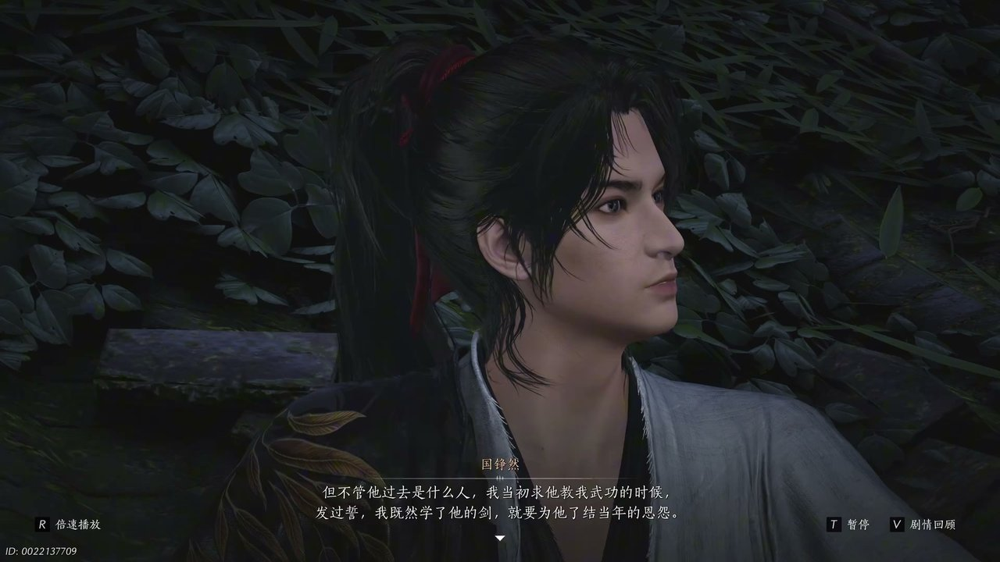
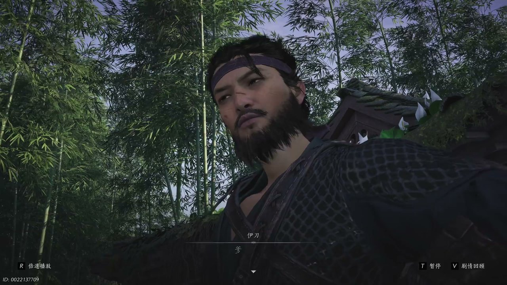
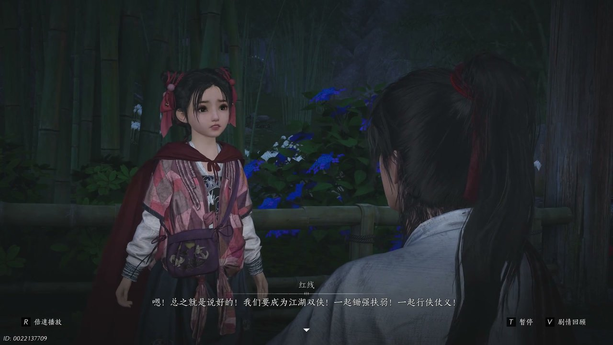
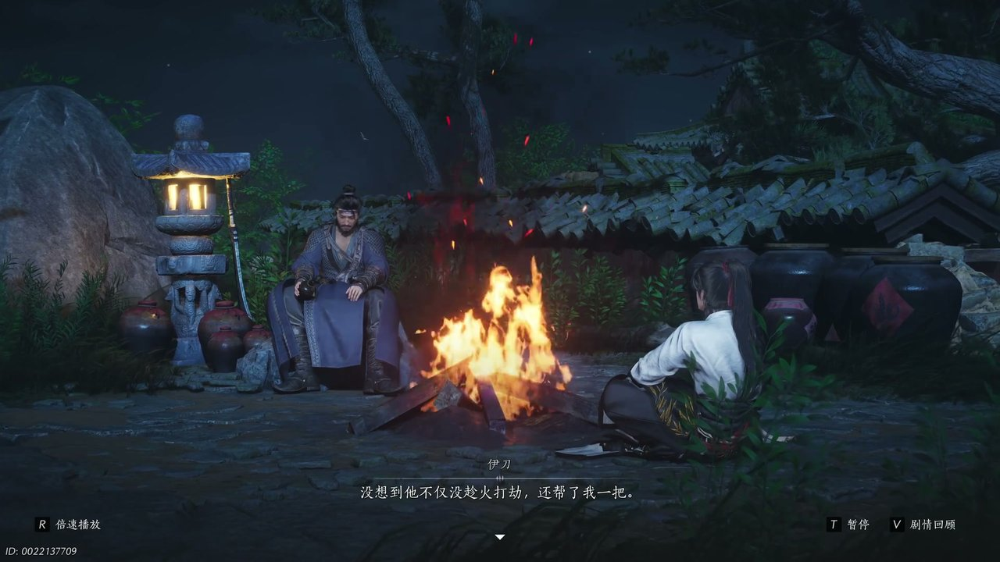
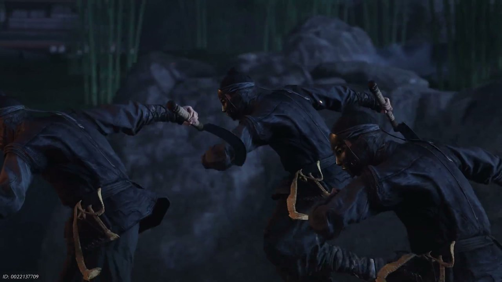
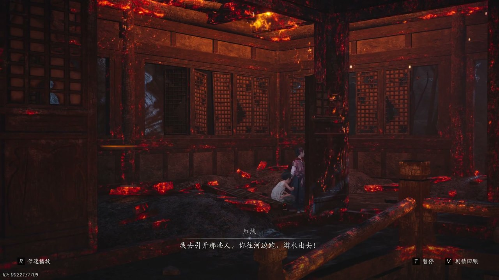

燕云背后的故事：第3集 红线之死
燕云背后的故事：第3集 红线之死

朋友们，上一集咱们说到——幻境窥秘、伊刀相逼、神仙渡将要迁徙；新来的朋友可能纳闷，安稳村落为何突生这么多江湖风波？简单说，少东家在医馆幻境得知诸多秘辛，不愿跟着寒姨躲避纷争。可他哪知道，平静村落即将迎来一场灭顶之灾。这不，少东家主动找到伊刀，想要一同去往开封追查江叔下落。

破旧的屋舍墙面斑驳，院落荒芜杂草丛生，连飞鸟都不愿在此停留，地面落满干枯的落叶。少东家主动走到伊刀身前，脸上带着诚恳的神色，抬手问候对方伤势：“嘿刀哥，你伤好些了没有啊。”伊刀靠在残破门框上，语气带着几分戏谑：“托了你的福，老子终日猎鹰，今朝被你们家雀啄了眼。”少东家连忙致歉，坦言此前误以为二人是仇敌，又主动提出想要跟着伊刀前往开封，执意要探寻江无浪的过往。他挺直脊背，语气坚定地说出心中所想：“我既然学了他的剑，就要为他了解当年的恩怨。”伊刀起初并不认可少年单薄的执念，觉得他不知江叔恩怨凶险，可听完少东家一番发自肺腑的话语后，不由得心生赞许，认可了这份义气。红线闻声从一旁走出，好奇打量着江湖人称死人刀的伊刀，稚嫩的话语逗得伊刀心绪柔和下来。

红线蹦蹦跳跳来到两人中间，眼神清澈地望着伊刀，说起曾经看到寒姨斥责伊刀的场景，好奇询问对方是否真的是江湖大侠。伊刀收起一身凛冽杀气，开口反问在场两人，闯荡江湖的人最怕什么。少东家思索片刻，回答是难缠的对手。红线却抢先开口，说出一番出人意料的话语：“大侠最怕最怕你爹爹妈妈，他们又疼你又要管你。”微风拂过院落树梢，枝叶轻轻晃动，伊刀听完之后沉默许久，脸上露出难得柔和的神情。他坦言自己一生快意恩仇，唯独遇到一个人，既善待自己又处处管束自己，自从遇见那人之后，自己再也无法活得无拘无束。伊刀抬手牵过一匹骏马，将马匹赠予红线，红线满心欢喜，当即给马儿取名滴答。随后伊刀打算前往不羡仙酒馆品尝寒姨酿造的美酒，约定夜半时分在破庙会合，再一同启程前往开封。

空旷的院落里只剩下少东家与红线二人，红线拉着少东家的衣袖，满心期待想要跟着一同闯荡江湖。少东家面露难色，告知红线自己要前往凶险之地打探消息，无法带着她同行，叮嘱她留在神仙渡等候，等一切安顿妥当便回来接她。他抬手抚摸红线头顶，告诉红线在自己离开的这段时间，她就是神仙渡的领头人，要有老大的模样。红线虽然满心不舍，还是点头答应下来，转身拿出亲手缝制的红披风送给少东家。红线眼神认真，拉着少东家定下约定：“我们要成为江湖双侠，一起锄强扶弱。”少东家郑重应允二人的约定，承诺必定信守诺言。一旁的窦豆豆也找到少东家，告知自己已经找回过往记忆，记起了自己的爹娘，打算跟着伊刀离开神仙渡寻找家人，向少东家道谢之后，留下告别话语便悄然离去。

夜半破庙之中，烛火摇曳跳动，少东家拿出寒姨珍藏的十年陈酿离人泪，与伊刀对坐饮酒。酒香弥漫在破败庙宇之中，少东家心中满是疑惑，向伊刀询问楚清泉是怎样一位江湖侠客。伊刀端起酒碗一饮而尽，语气复杂地说道：“他追杀老子九次，没想到他不仅没趁火打劫，还帮了我一把。”伊刀缓缓道出过往经历，二人原本是死对头，数次交手不分胜负，在伊刀陷入险境之时，楚清泉出手相助，伊刀心怀感激，立下誓言要帮楚清泉完成一件事。楚清泉离世之前，嘱托伊刀前往神仙渡寻找寒香寻，探寻江无浪隐藏的秘密。伊刀一路奔波，背着重伤的楚清泉四处逃亡，渡过黄河之时，楚清泉的遗体不慎落入河水之中，这也是伊刀执意来到神仙渡的缘由。

两人正要动身启程，远处忽然出现大批修金楼的人马，人影密布将破庙四周团团围住，空气中弥漫着肃杀的气息。伊刀神色一沉，察觉到对方是冲着神仙渡的秘密而来，厉声下令：“动手一个都别留。”刀剑相撞之声接连响起，伊刀身手凌厉，出手干脆利落，顷刻间击倒一众喽啰。可敌人人数众多，还布设了迷阵，众人陷入鬼打墙的困境，无论朝着哪个方向前行，最终都会回到原地。村落四处燃起大火，浓烟遮蔽天空，不少乡亲被困在火海之中无法脱身。少东家遇见被困的杜乔仙与袁金刚，得知大量乡亲被敌人抓捕，迷阵困住了所有人，根本无法向外求援。少东家迅速做出安排，让袁金刚在高处射箭掩护，自己带着其他人前往九香塔躲避，借助塔下隐秘地道暂时藏身。

火光越来越盛，迷阵依旧没有破除的迹象，红线看着惊慌失措的众人，不愿躲在地道之中苟活。她拉住身边的辫子哥，轻声安抚对方不要哭泣，随后下定决心：“我去引开那些人，你往河边跑。”红线趁着混乱，偷偷从地道狭窄的缝隙钻出，想要前往高处为众人指明迷阵方向，破开困局。她身形瘦小，顺利钻出地道，却不幸被修金楼的妖女察觉，对方布下迷阵困住整个神仙渡，一心想要夺取寒姨隐藏的秘密。红线孤身面对强敌，没有丝毫畏惧，想要凭借自己的力量给少东家争取破阵的时间。妖女身手诡异，红线难以抵挡，最终被对方擒住。少东家与伊刀破除迷阵之后急忙赶来营救，可一切为时已晚，红线为了护住神仙渡众人，最终不幸殒命，没能等到和少东家一同闯荡江湖的那一天。
这一集看下来，我最大的感受就是江湖美好愿景终究抵不过突如其来的灾祸。上一集里我们只知道江湖向往、离别将至、秘密暗藏；到了这一集，伙伴离去、村落遇袭、约定破碎。楚清泉究竟留下了什么秘密？修金楼为何紧盯神仙渡不放？红线的牺牲又会换来怎样的转机？所有线索交织在一起，少东家沉浸在悲痛之中，放弃前往开封的计划，决心向修金楼复仇，一场惨烈的反击即将拉开帷幕。为红线复仇。观众一：少东家背负着红线的遗愿，会走上怎样的江湖路？观众二：神仙渡遭遇重创之后，寒姨是否会现身收拾残局？下一集关键词：复仇之路、修金楼秘辛。
关于我们
📱 公众号名称：三天游戏
✍️ 作者：曾三天
扫码关注公众号，获取每日最新资讯

商务合作与版权
商务合作 / 内容投稿 / 品牌推广
请关注公众号「三天游戏」后台留言联系
版权声明：本文由作者整理，转载需注明出处。